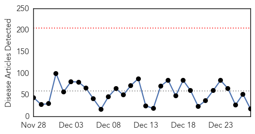
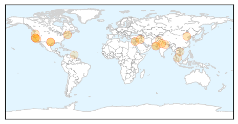

30 Day Trends
Web: 0 alerts, 0 warnings
Twitter: 0 alerts, 0 warnings
Top Articles:
- 0.933
- Cases of Shigella up among San Francisco homeless
- 0.917
- Chicago Tribune
- 0.917
- Chicago Tribune
- 0.917
- Chicago Tribune
- 0.917
- Chicago Tribune
- 0.917
- Chicago Tribune
- 0.894
- HMC Expert says Good Hygiene is Key to Preventing Spread of Contagious Diseases
- 0.866
- U.S., allies conduct 12 air strikes against Islamic State -Task Force
- 0.865
- Karachi hit by foot-and-mouth disease 954 times this year
- 0.850
- NewsDaily
- 0.788
- Poultry producers brace for bird flu fallout
- 0.767
- Poultry producers worry bird flu will impact trade
- 0.748
- Cold affects life in Tarai
- 0.543
- Vietnam steps up early ARV treatment for HIV patients
- 0.541
- Health D-G shares experience of visiting Kuala Krai during floods
- 0.512
- Fact-finding mission: ‘Bad governance, health issues and lack of education plague Thar’
- 0.512
- Drop in temperature: Respiratory infections on rise
- 0.500
- Nurses turn out to work
Top Tweets:
- 0.610
- Abre XVI Muestra del Arte Misionero: En el marco de la “Semana Fundacional de las Misiones”, se realizará la... http://t.co/dzr91lfRyj
- 0.551
- Maduro retira a Ramírez de cancillería venezolana y lo designa en la ONU: El presidente de Venezuela Nicolás M... http://t.co/12rGquK9Zv
Web/News Articles
Tweets

Article Locations
Article Confidences